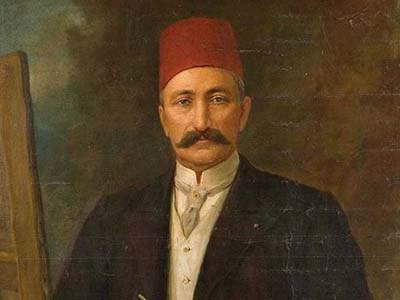
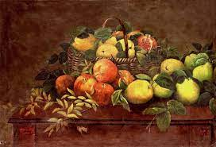

(d.1841 - ö. 5 Mayıs 1907), Osmanlı ressamı, asker ve bürokrat. Asıl adı Ahmet Ali'dir.
İstanbul'un Üsküdar semtinde doğdu. 1855 yılında Tıbbiye Mektebi'ne girdi. Tıp öğrenimini tamamlamadan Harbiye Mektebi'ne geçti. Harbiye Mektebi'nde aldığı anatomi ve perspektif dersleri ile resim yeteneğini geliştirdi. Resme olan ilgisi ortaya çıkınca Sultan Abdülaziz tarafından Paris'e gönderildi. Burada yedi yıl Gerome ve Boulanger atölyelerinde çalıştı.Şeker Ahmet Paşa, çağdaş Türk resim sanatı’nın temel taşlarından biri olarak değerlendirilmektedir. Peyzaj temasına yaptığı dünya çapındaki üslup katkısı, sanatçının mekân derinliği ve atmosfer ilişkilerini yorumlayan duyarlığının ürünü olarak görünür. Şeker Ahmet Paşa’nın düzen anlayışına mal olan lirizm, özgün bir şema geometrisiyle dengelenmektedir.
Şeker Ahmet Paşa'nın yaşadığı yıllarda siyasal ve sosyal açıdan pek çok olay gerçekleşmiş olmasına karşın, Paşa'nın eserlerinde bu tür olayların ele alınmadığı gözlenebilmektedir. Bu, onun bir gözlemci olarak bakışlarını doğaya çevirmiş, yaşadığı topluma kapalı, yalnız iç dünyasında yaşayan bir sanatçı olduğunu ve bu tavrını yaşamı boyunca koruduğunu göstermektedir (Güvemli, 1975).
Paris'te bulunduğu yıllarda, tabiatta, açık havada yapılan resmi savunan Barbizon ekolü ressamlardan etkilenmiştir. 1870'te Roma'ya gitmiş, 1871 yılında İstanbul'a dönmüştür. Bir yandan askerî kariyerini sürdürürken, diğer yandan resim yapmıştır. 27 Nisan 1873'te Sultanahmet'te açtığı sergi, Türk resim sanatında bir sanatçının kendi adına açtığı ilk resim sergisi olarak literatüre geçmiştir.
Natürmort çalışmaları ile ünlüdür. Resimlerinin önemli bir bölümü İstanbul ve Ankara Resim Heykel Müzeleri ile, Sakıp Sabancı Müzesi ve bazı özel koleksiyonlarda bulunmaktadır.
